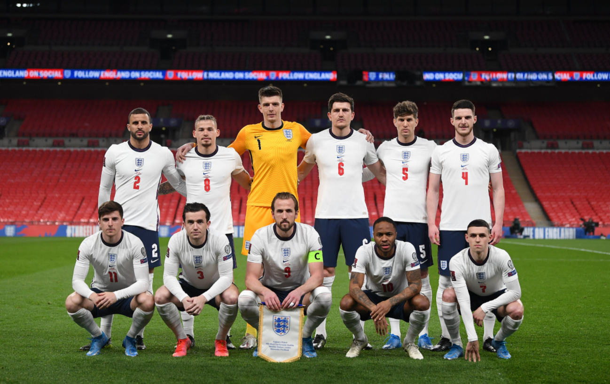

COPAS QUE JÁ PARTICIPOU:
A Seleção Inglesa participou de sua 15ª edição da Copa do Mundo de futebol em 2018. Em 2022 Fará sua 16° participação na edição que será no Catar/Qatar

PREMIAÇÕES QUE JÁ ALCANÇOU
Campeã na Copa do Mundo de 1996
NOME DO TÉCNICO:
Gareth Southgate
PRINCIPAIS JOGADORES
Saka
Kane
Rowe
Tabela de jogos
| Data/Hora | Estádio | Adversário |
|---|---|---|
| 21 nov 2022 / 16h00 | Estádio Internacional Khalifa | Irã |
| 25 nov 2022 / 22h00 | Estádio Al Bayt | EstadosUnidos |
| 29 nov 2022 / 22h00 | --- | UEFA |